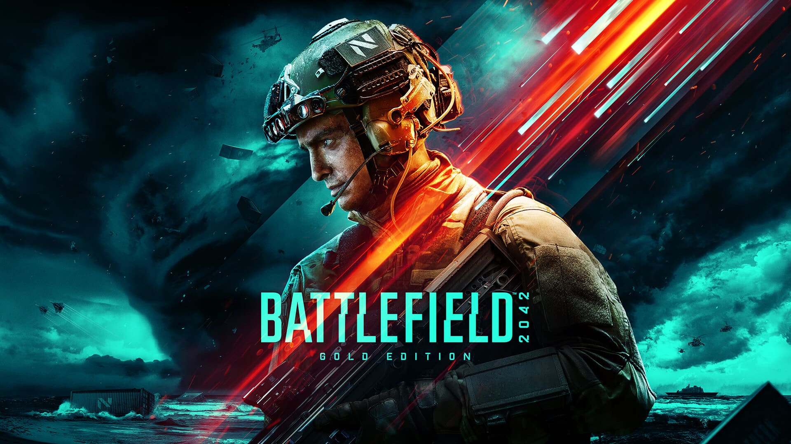
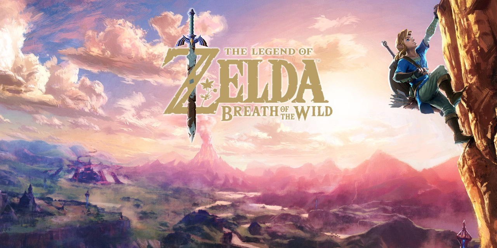
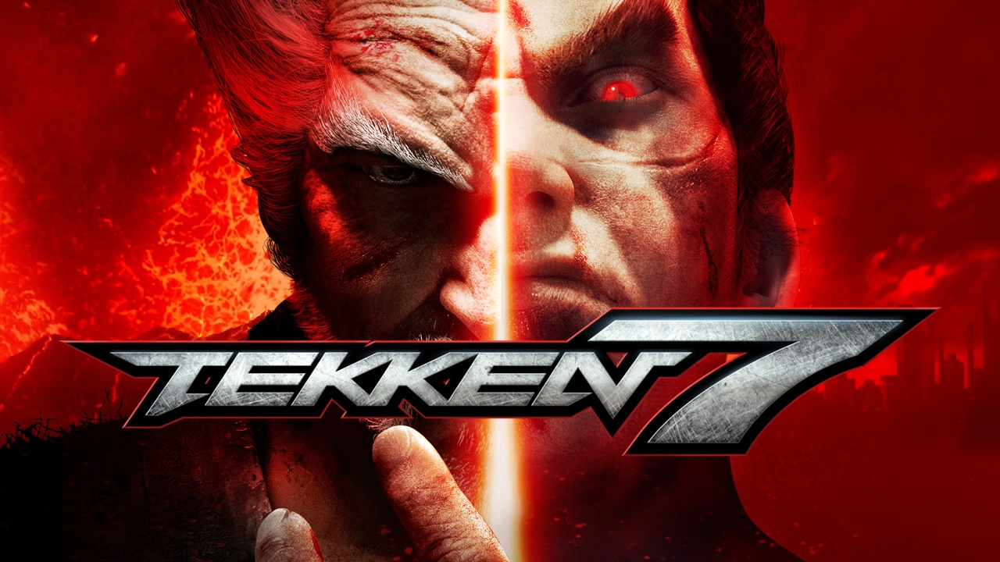
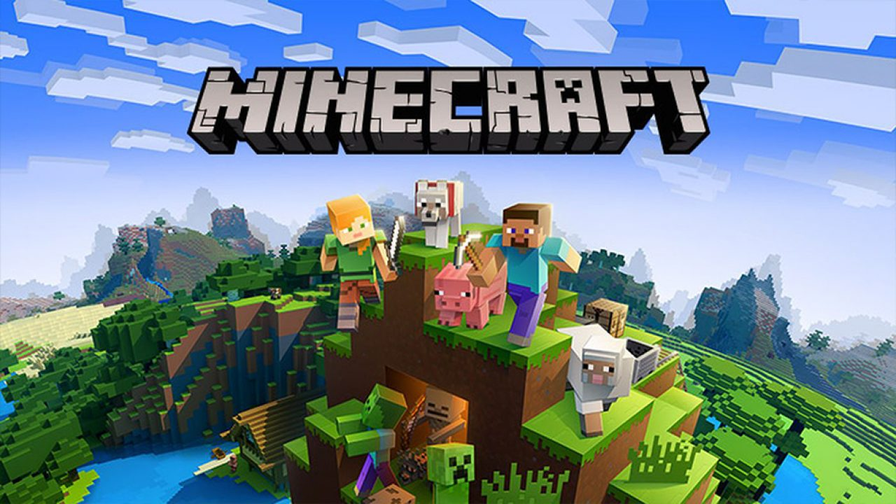
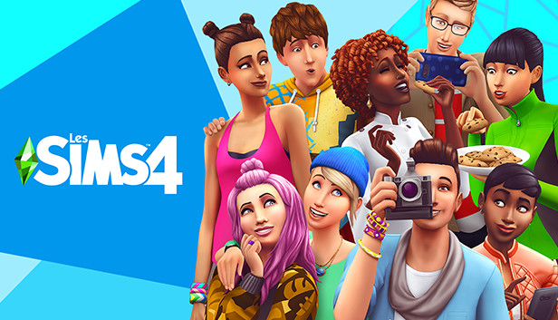

Dans cette page, je vais vous parler de plusieurs genres de jeux-vidéos ainsi que de l'un de leur jeu phare.
Battle Royale
Le Battle Royale est un mode de jeu dans lequel les joueurs atterissent sur une carte avec 99 autres joueurs.
Ils doivent récuperer des armes, des soins et des protections dans la nature et les diverses infrastructures présentes sur la carte.
L'un des battle royale les plus connus est Fortnite, dévellopé par Epic Games :
Le jeu reprend le principe des jeux battle royale dont l'objectif est d'être le dernier survivant, peu importe le moyen, en éliminant les joueurs adverses ou en se cachant. Au début de chaque partie, les joueurs attendent tous dans un bus volant qui survole l'île, puis ils choisissent un point d’atterrissage à l’aide de la carte de jeu. Les joueurs s'engagent ensuite dans la quête d'armes, d'objets (soins, grenades, pièges). Dans le même temps, les joueurs peuvent commencer à aller se battre, ou rester cachés, suivant leur stratégie. Le but du jeu étant d'atteindre le "top 1", être le dernier survivant de la partie.
FPS
Le jeu de tir à la première personne (en anglais FPS pour First-person shooter) ou en vue subjective, aussi appelé Doom-like est un genre de jeu vidéo de tir fondé sur des combats en vision subjective (« à la première personne »), c'est-à-dire que le joueur voit l'action à travers les yeux du protagoniste.
L'un des FPS les plus connus est Battlefield 2042, dévellopé par Electronic Arts :

Le jeu se déroule dans un futur sombre et pessimiste où une succession de crises a provoqué la faillite de nombreux Etats et un flot massif de réfugiés surnommés les "Sans-Patrie" (No-Pats en version originale). Ces derniers deviennent des mercenaires (appelés "forces opérationnelles") pour se battre avec l'une des deux dernières superpuissances mondiales : les États-Unis ou la Russie (qui représentent les deux factions jouables du jeu).
RPG
Le RPG (Role Playing Game), veut dire jeu de rôle en français. Dans un RPG, le joueur incarne un personnage qu'il pourra faire évoluer avec une certaine liberté au cours du temps, grâce à différents combats et quêtes, motivé par l'envie d'explorer et le sens de l'aventure.
L'un des RPG les plus connus est The Legend Of Zelda : Breath of The Wild, dévellopé par Nintendo :

Breath of the Wild propose d'incarner Link, un héros hylien de Hyrule, amnésique, réveillé après un long sommeil d'une centaine d'années par une mystérieuse voix qui le guide afin d'éliminer Ganon, « Le Fléau », et restaurer la paix dans le royaume d'Hyrule. À l'instar du premier jeu de la série sorti en 1986, le joueur reçoit peu d'instructions et peut librement explorer un univers en monde ouvert, en résolvant différentes quêtes, sanctuaires et énigmes, en plus de la tâche principale. Lors de son aventure, il découvrira que la voix qui l'a réveillé était celle de sa dulciné, la princesse de Hyrule : Zelda.
MMO
Le jeu en ligne massivement multijoueur (ou MMO) est un genre de jeu vidéo faisant participer un très grand nombre de joueurs simultanément par le biais d'un réseau informatique ayant accès à Internet.
L'un des MMO du sous-genre MOBA (multiplayer online battle arena) les plus connus est World Of Warcraft IV, dévellopé par Blizzard :
Le jeu World Of Warcraft IV prend place dans le monde imaginaire d’Azeroth, et dont le cadre historique se situe quatre ans après les évènements concluant Warcraft III. Le joueur choisit son personnage parmi huit, dix ou douze races disponibles séparées par deux factions : L'Alliance et la Horde
Si vous vous placez du coté de L'alliance, vous pourrez choisir les classes suivantes : Les Draeneï, les Elfes de La Nuit, les Gnomes, les Humains, les Naïns, les Pandarens et les Worgens.
Si vous vous placez du coté de La Horde, vous pourrez choisir les classes suivantes : Les Elfes de Sang, les Gobelins, les Morts-Vivants, les Orcs, les Taurens, les Trolls et les Pandarens.
Jeu de combat
Le jeu de combat (ou fighting game), parfois appelé abusivement en France VS fighting (pour versus fighting) ou plus familièrement Jeu de baston, est un genre de jeu vidéo opposant un nombre limité de personnages (deux le plus souvent).
L'un des jeux de combats le plus connu est Tekken 7, dévellopé par Bandai Namco :

Dans Tekken 7, deux combattants s'affrontent dans un environnement 3D destructible (limité à certains murs et sols). Le but est de réduire la barre de santé de l'adversaire à 0 en lui assénant des coups. Le jeu attribue une touche à chaque bras et jambe du personnage. Il est alors possible de créer des enchaînements de plusieurs coups en essayant de les combiner, créant ainsi des combos. Chaque personnage a également la possibilité d'envoyer son adversaire dans les airs et ainsi l'enchaîner sans que celui-ci ne puisse riposter.
Bac à sable
Un jeu bac a sable (ou sandbox en anglais) n'a pas forcement d'objectif prédéterminé par le concepteur du jeu. Le joueur est libre d'accomplir les objectifs définis par les développeurs du jeu ou lui même a l'aide d'un panel d'outils permettant de modifier le contenu, parfois de manière permanente.
L'un des jeux bac a sable le plus connu est Minecraft, dévellopé par Mojang et racheté par Microsoft :

Minecraft est un jeu vidéo de type aventure « bac à sable » (construction complètement libre) développé par le Suédois Markus Persson, alias Notch, puis par la société Mojang Studios. Il s'agit d'un univers composé de voxels et généré de façon procédurale, qui intègre un système d'artisanat axé sur l'exploitation puis la transformation de ressources naturelles (minéralogiques, fossiles, animales et végétales).
Simulation
Les jeux dits de "simulation" sont des jeux vidéos qui visent à simuler la réalité, représentant virtuellement une activité humaine ou le fonctionnement d'une machine, et dans lequel le joueur a l'impression d'être physiquement impliqué dans l'activité représentée à l'écran.
L'un des jeux de simulation le plus connu est Les Sims 4, dévellopé par Electronic Arts :

C’est un simulateur de vie qui nous permet de créer des familles et de gérer leur vie. Leurs humeurs sont au centre de cette licence. En fonction de ce qu’ils font ou de ce qui les entoure, comme les objets qu’ils doivent collectionner, ce qu’ils mangent ou les autres Sims, leur humeur changera et débloquera de nouvelles actions qu’ils pourront faire. Par exemple, s’ils sont tristes, ils pourront peindre des tableaux tristes, s’ils sont enjôleurs, ils pourront cuisiner des biscuits en forme de cœur, s’ils sont en colère, ils pourront taper dans des poubelles ou se battre.